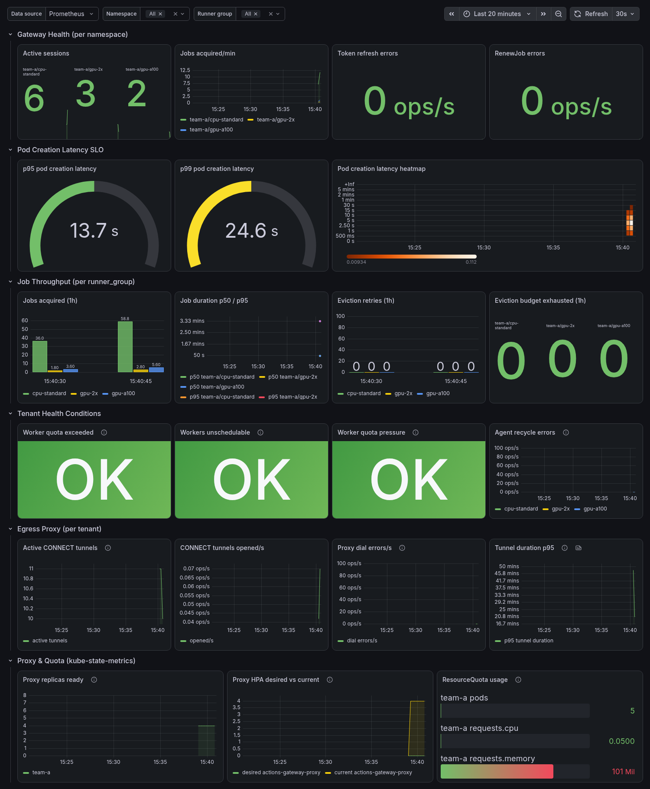
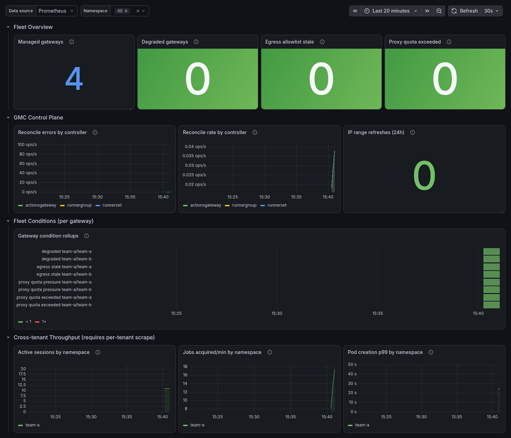

Observability¶
Audience: SRE, Platform engineer
Every component exposes Prometheus metrics from the standard controller-runtime metrics server, so built-in metrics (reconcile latency, work queue depth, etc.) are emitted automatically alongside the custom metrics below. The serving posture differs by component:
- GMC manager —
:8443/metrics, served over TLS. How a scrape verifies the cert is controlled bymetrics.tls.certManager.enabled(see Verifying the metrics scrape TLS (GMC manager)). - Per-tenant AGC and proxy —
:8443/metrics, served over mutual TLS: a scraper must present a client certificate signed by that tenant's metrics CA. The GMC publishes the scraper's client bundle per tenant. See Scraping per-tenant AGC and proxy metrics (mTLS).
For SLO targets associated with these metrics, see Appendix A — Capacity Targets & SLOs.
Table of Contents¶
- Logging
- Distributed Tracing (AGC)
- Enabling tracing
- Enabling tracing on GMC-managed AGCs
- How to Access Metrics
- Install-time scraping prerequisites (GMC manager)
- Verifying the metrics scrape TLS (GMC manager)
- Scraping per-tenant AGC and proxy metrics (mTLS)
- Full Metrics Reference
- Scale-set acquisition tier (Q264)
- Proxy metrics
- Symptom → Metric Mapping
- Recommended Alert Rules
- SLO Recording Rules
- Grafana Dashboards
- Tenant dashboard
- Platform dashboard
- Dashboard Variables
- Label Cardinality Warning
- Breaking observability changes (Q205)
Logging¶
All four components — the GMC, the per-tenant AGC, the egress proxy, and the worker wrapper — emit structured JSON logs at info level by default, one JSON shape per process stream, ready to ship to a log aggregator (Loki, Elasticsearch, CloudWatch, etc.) without reformatting. No flag needs to be set in production; the JSON default is what the GMC-provisioned Deployments run with.
The controllers (GMC, AGC) take controller-runtime's standard zap flags. For local development, pass --zap-devel to switch to human-readable console logs at debug level, or use the finer-grained --zap-encoder / --zap-log-level flags (run a controller with --help for the full set). Application code paths that log through the Go standard library's log/slog are bridged onto the same zap logger, so --zap-log-level governs every line a controller emits — not just the manager's own — and the whole process shares one JSON schema.
The egress proxy and the worker wrapper are not controllers; they read their level from the LOG_LEVEL environment variable (info | debug, default info).
Per-tenant log level (GMC-managed AGCs). For a tenant the GMC provisions, you do not set --zap-log-level or LOG_LEVEL by hand. Set spec.logLevel (info | debug, default info) on the ActionsGateway CR and the GMC threads it to both the AGC and that tenant's egress proxy as LOG_LEVEL (the AGC honors LOG_LEVEL unless an explicit --zap-log-level flag is passed; the GMC never stamps one). Flipping it rolls the AGC and proxy Deployments — it is a rolling restart, not a hot reload. See tenant onboarding — per-tenant log level.
Debug diagnostics for otherwise-silent paths¶
Several paths that can stall a tenant or a session emit debug-level diagnostics (suppressed at the default info level). Raise the component to debug to surface them — for a GMC-managed tenant, set spec.logLevel: debug on the ActionsGateway (the GMC threads it to the AGC and proxy); for a standalone controller, --zap-log-level=debug; for a standalone proxy/worker, LOG_LEVEL=debug. Useful grep anchors:
| Path | Component | Log message substring |
|---|---|---|
| Session waiting on a worker pod that never reaches a terminal phase (top "stuck session" cause) | AGC | pod already terminal at registration, registered for pod completion, pod completion observed, pod wait cancelled before completion |
Permanent baseline listener crash/restart backoff (otherwise only the exited with error warning is visible) |
AGC | restarting after backoff, restart aborted |
| Which of the ~12 per-tenant provisioning steps a stalled reconcile is on | GMC | reconcileResources step |
| Per-tenant TLS cert issuance / renewal | GMC | issuing proxy TLS cert, generating metrics mTLS bundle |
| Per-session / per-job lifecycle (one line per listener spawn, job pickup, heal, and worker pod) | AGC | listener goroutine started, job message received, idle shutdown, healing stale session, job finished; recycling single-use JIT agent, job Secret created, worker pod created, worker pod completed |
These per-session/per-job lines are at debug by design: at thousands of
concurrent sessions they dominate log volume, so the default info stream carries
only the operator-relevant lifecycle events (concurrency-ceiling holds, quota
and eviction retries, errors). Raise the AGC to debug — spec.logLevel: debug
for a GMC-managed tenant, or --zap-log-level=debug standalone — to follow an
individual job.
Correlation fields. AGC log lines carry structured fields that let you follow
one session→job→pod through a log pipeline. Filter on namespace and group
(RunnerGroup name) to scope to a tenant's RunnerGroup; agentIndex and
sessionId identify a single listener goroutine and its current broker session
(the sessionId is rebound when a session is healed or an agent recycled, so it
always names the live session); podName appears on the provisioner lines for an
acquired job's worker pod.
Admission rejections (reserved-namespace, cross-namespace gitHubAppRef, privileged container, disallowed PriorityClass, silent securityProfile downgrade) are logged server-side at info — they need no debug flag — as ActionsGateway admission denied with the operation, namespace, name, and reason fields, giving an audit trail of denied attempts.
Distributed Tracing (AGC)¶
The per-tenant AGC emits OpenTelemetry traces for its two hottest operational paths:
RunnerGroup.Reconcile— one span per reconcile, attributed withk8s.namespace.name/gateway.runnergroup.name. Errors set the span status.Provisioner.provision— one span per acquired job (the job-to-pod path), with child spansstageJobSecret,countActivePods,createPod, andwaitForCompletion. The root span carriesk8s.namespace.name,gateway.owner.name,gateway.plan.id,k8s.pod.name,gateway.active_pods,gateway.ceiling_held,gateway.priority_class, and the finalgateway.pod.phase/gateway.pod.reason/gateway.provision.duration_seconds.waitForCompletionis usually the long pole, so its child span tells you whether latency is in scheduling/runtime versus the controller.
Span attribute names follow the OpenTelemetry semantic conventions: Kubernetes-native attributes use the
k8s.*keys (k8s.namespace.name,k8s.pod.name); project-specific attributes are namespaced undergateway.. These keys were renamed in the Q205 naming audit — see Breaking observability changes for the old→new mapping.
Each reconcile and each job provision is its own root trace — there is no inbound trace context to continue, and the per-job spans run on the listener goroutines independently of the reconcile that started the pool.
Tracing is opt-in and off by default. With no OTLP endpoint configured the AGC installs no exporter and the spans are no-ops (near-zero cost), so production runs without tracing unless you point it at a collector.
Enabling tracing¶
The AGC reads the standard OpenTelemetry SDK environment variables — there is no bespoke flag. Tracing turns on as soon as an OTLP endpoint is configured:
| Variable | Effect |
|---|---|
OTEL_EXPORTER_OTLP_TRACES_ENDPOINT or OTEL_EXPORTER_OTLP_ENDPOINT |
OTLP/gRPC collector address (e.g. otel-collector.observability:4317). Setting either one enables tracing. |
OTEL_SDK_DISABLED=true |
Hard kill switch — forces tracing off even when an endpoint is set. |
OTEL_SERVICE_NAME / OTEL_RESOURCE_ATTRIBUTES |
Override the default service.name (actions-gateway-agc) and add resource attributes. |
OTEL_TRACES_SAMPLER, OTEL_EXPORTER_OTLP_HEADERS, OTEL_EXPORTER_OTLP_TIMEOUT, … |
All other knobs are the SDK's standard env vars. |
On shutdown the AGC flushes buffered spans (5 s budget) before exiting.
Enabling tracing on GMC-managed AGCs¶
The GMC builds the AGC Deployment, so for a GMC-provisioned tenant you do not set these env vars by hand — you declare tracing on the ActionsGateway CR and the GMC translates spec.tracing into the standard OTEL_* env on the AGC Deployment:
apiVersion: actions-gateway.github.com/v1alpha1
kind: ActionsGateway
metadata:
name: team-a
namespace: team-a
spec:
gitHubAppRef:
name: team-a-github-app
gitHubURL: https://github.com/team-a-org
tracing:
endpoint: https://otel-collector.observability:4317 # enables tracing
sampler: parentbased_traceidratio # optional
samplerArg: "0.1" # optional — 10% of traces
resourceAttributes: # optional
deployment.environment: prod
# insecure: true # only for a plaintext in-cluster collector; TLS is the default
spec.tracing field |
AGC env it sets | Notes |
|---|---|---|
endpoint |
OTEL_EXPORTER_OTLP_TRACES_ENDPOINT |
Setting it is what enables tracing. Empty → no OTEL_* env, tracing stays off. |
insecure |
OTEL_EXPORTER_OTLP_TRACES_INSECURE |
Defaults to false (TLS). Set true only for a plaintext in-cluster collector. |
sampler |
OTEL_TRACES_SAMPLER |
One of always_on, always_off, traceidratio, parentbased_always_on, parentbased_always_off, parentbased_traceidratio (CRD-enforced enum). |
samplerArg |
OTEL_TRACES_SAMPLER_ARG |
Ratio in [0,1] for the ratio-based samplers. |
resourceAttributes |
OTEL_RESOURCE_ATTRIBUTES |
Rendered as a sorted key=value list. The AGC's own service.name/service.version take precedence. |
No auth headers via env.
spec.tracingdeliberately has no field forOTEL_EXPORTER_OTLP_HEADERS: those can carry bearer tokens, and this project keeps secrets out of environment variables (they leak into process listings and child processes). Authenticate the collector at the network layer instead — an in-cluster collector reached over the tenant's egress path, mutual TLS, or a service mesh.Testing-only passthrough. The
AGC_EXTRA_*mechanism (--allow-agc-extra-envon the GMC, thenAGC_EXTRA_OTEL_EXPORTER_OTLP_ENDPOINT=…in the GMC pod env) still exists but is gated for tests only and not for production use. When both are present,AGC_EXTRA_*wins (it is appended last). Preferspec.tracing.
How to Access Metrics¶
Port forward (ad-hoc): the per-tenant AGC/proxy metrics ports require a client
certificate (mTLS), so a plain curl is rejected at the TLS handshake. Present the
published scraper bundle (see the per-tenant section
for the Secret name and an end-to-end curl --cert/--key/--cacert example).
Prometheus operator (production): the chart wires scraping automatically when
metrics.serviceMonitor.enabled=true — both the GMC manager ServiceMonitor and a
per-tenant ServiceMonitor for each provisioned tenant's AGC/proxy. The metrics port
is named metrics (:8443) on every Service. You do not hand-author these
ServiceMonitors; the sections below describe what they wire and the prerequisites.
Install-time scraping prerequisites (GMC manager)¶
The default GMC install ships the manager NetworkPolicy enabled by default
(networkPolicy.enabled=true). Selecting the manager pod flips it to default-deny on
ingress, so its /metrics endpoint admits traffic only from namespaces carrying
the right label:
- Scraping the GMC manager metrics: label your Prometheus namespace
metrics: enabled, or no scrape will reach the manager:
The validating-webhook port (container 9443) is intentionally re-allowed from
any source — the kube-apiserver that calls it is not a pod in a labeled
namespace, so a source restriction there would silently break every
ActionsGateway admission (failurePolicy: Fail). The webhook is TLS +
caBundle authenticated, so the sensitive surface stays the metrics: enabled
restriction above. No namespace label is required for CR admission.
This applies to the GMC manager only. The per-tenant AGC and proxy metrics are governed by the per-tenant NetworkPolicies the GMC generates (the AGC and proxy NPs already admit monitoring-namespace scrapes of the metrics port) and use mutual TLS — see Scraping per-tenant AGC and proxy metrics (mTLS).
Runtime enforcement of these policies depends on the CNI; kindnet's
kube-network-policiesdoes not drop all egress negatives (see the worker egress limitation in troubleshooting.md). The manager NP is verified by manifest review and is pending a Tier-A runtime check.
The ServiceMonitor integration stays opt-in, behind the
metrics.serviceMonitor.enabled chart value (default false): out-of-box
Prometheus Operator scraping. It is left off by default because the
ServiceMonitor CRD only exists once the Prometheus Operator is installed, so
rendering it unconditionally would break helm install on clusters without it.
Verifying the metrics scrape TLS (GMC manager)¶
The GMC metrics endpoint (:8443) is served over TLS. How the scrape verifies
that certificate is controlled by metrics.tls.certManager.enabled:
true(default, secure): cert-manager issues a dedicated metrics serving cert — themetrics-serving-certCertificate, minted from the sameselfsigned-issueras the webhook into themetrics-server-certSecret. The GMC serves it (--metrics-cert-path), and the renderedServiceMonitorverifies it against the issuing CA:
tlsConfig:
serverName: <namePrefix>-controller-manager-metrics-service.<namespace>.svc
ca:
secret:
name: metrics-server-cert
key: ca.crt
The scrape is authenticated end-to-end and not MITM-able. This path
requires cert-manager (it reuses the webhook's Issuer) and is automatically
inert when certManager.enabled=false.
false, orcertManager.enabled=false: the GMC falls back to controller-runtime's auto-generated self-signed metrics cert, and theServiceMonitorscrapes withtlsConfig.insecureSkipVerify: true. Prometheus cannot verify the server, so an in-cluster attacker who can intercept the scrape connection could impersonate the metrics endpoint (the bearer token still authenticates the scraper to the server, but not the server to the scraper). Use this only on clusters without cert-manager, accepting the weaker posture.
The metrics-server-cert Secret is read from the ServiceMonitor's namespace
(the GMC release namespace), where the chart creates it — no extra copying is
needed. Because verification follows certManager.enabled by default, an
install that already uses cert-manager for the webhook (the default) gets
verified metrics scraping automatically once the ServiceMonitor is enabled.
Scraping per-tenant AGC and proxy metrics (mTLS)¶
Each provisioned tenant runs its own AGC and egress-proxy pods, which serve
/metrics over mutual TLS on :8443. Unlike the GMC manager, the listener
requires a client certificate signed by that tenant's metrics CA — there is
no bearer-token or insecureSkipVerify fallback. Three things are wired
per tenant so Prometheus can scrape them:
- Metrics Services (always created). The GMC creates a
metrics-named:8443port on the proxyService(actions-gateway-proxy) and a dedicated AGCService(actions-gateway-controller), both in the tenant namespace. These exist regardless of the scrape toggle. - Per-tenant
ServiceMonitors (opt-in). Whenmetrics.serviceMonitor.enabled=true, the GMC also creates oneServiceMonitorper component in the tenant namespace (actions-gateway-proxy-metrics,actions-gateway-controller-metrics). Each selects only its own component's Service via the tenant's owner labels, so one tenant's monitor never selects another tenant's pods. - The scraper client bundle (mTLS). Each
ServiceMonitorpresents the per-tenant scraper client bundle from theactions-gateway-metrics-clientSecret in the tenant namespace —tls.crt/tls.keyauthenticate the scraper to the listener andca.crtverifies the listener's server cert.serverNameis the component's<service>.<namespace>.svcDNS name (a SAN on the server cert), so the scrape is verified end-to-end and not MITM-able:
tlsConfig:
serverName: actions-gateway-proxy.<tenant-namespace>.svc
ca: { secret: { name: actions-gateway-metrics-client, key: ca.crt } }
cert: { secret: { name: actions-gateway-metrics-client, key: tls.crt } }
keySecret: { name: actions-gateway-metrics-client, key: tls.key }
Prerequisites:
- Prometheus Operator must be installed (the
monitoring.coreos.comServiceMonitorCRD must exist). The toggle is off by default precisely because the CRD is not present on every cluster. If the CRD is absent when the toggle is on, the GMC logs a warning and emits aServiceMonitorCRDMissingEvent on theActionsGatewayand continues — a missing scrape prerequisite never blocks tenant provisioning. - Prometheus reads the client bundle from the
ServiceMonitor's namespace (the tenant namespace), so the scraping Prometheus must be configured to selectServiceMonitors across tenant namespaces (serviceMonitorNamespaceSelector) and granted read access to the per-tenantactions-gateway-metrics-clientSecret. Each tenant has a distinct CA and client cert, which is why a single cluster-wideServiceMonitorcannot scrape them — the wiring is necessarily per tenant. - NetworkPolicy: label the Prometheus namespace
metrics: enabledso the per-tenant NetworkPolicy admits the scrape (the AGC and proxy policies admit the:8443metrics port only frommetrics=enablednamespaces).
Ad-hoc verification (mounting the published bundle locally):
ns=<tenant-namespace>
kubectl get secret actions-gateway-metrics-client -n "$ns" \
-o jsonpath='{.data.tls\.crt}' | base64 -d > client.crt
kubectl get secret actions-gateway-metrics-client -n "$ns" \
-o jsonpath='{.data.tls\.key}' | base64 -d > client.key
kubectl get secret actions-gateway-metrics-client -n "$ns" \
-o jsonpath='{.data.ca\.crt}' | base64 -d > ca.crt
kubectl port-forward -n "$ns" svc/actions-gateway-controller 8443:8443 &
curl --cert client.crt --key client.key --cacert ca.crt \
https://actions-gateway-controller.$ns.svc:8443/metrics --resolve \
"actions-gateway-controller.$ns.svc:8443:127.0.0.1"
rm -f client.crt client.key ca.crt # delete the cert material when done
(The bundle is a client certificate, not a long-lived account credential; still remove the files when finished.)
Full Metrics Reference¶
| Metric | Type | Labels | Description |
|---|---|---|---|
actions_gateway_active_sessions |
Gauge | namespace, runner_group |
Currently open long-poll sessions. One per RunnerGroup at steady state; rises toward maxListeners during bursts. |
actions_gateway_jobs_acquired_total |
Counter | namespace, runner_group |
Jobs successfully acquired from the broker. |
actions_gateway_jobs_admission_rejected_total |
Counter | namespace, runner_group |
Delivered jobs the pre-acquisition capacity gate left queued at GitHub (acquire skipped because the group is at its worker ceiling). Expected to rise under sustained saturation; a persistent gap vs. jobs_acquired_total means demand exceeds the group's maxWorkers / priorityTiers ceiling — raise the ceiling or namespace ResourceQuota. |
actions_gateway_jobs_duplicate_delivery_total |
Counter | namespace, runner_group |
Duplicate job deliveries deduplicated (Q260): the broker delivered the same job (same planID, distinct RunnerRequestID) to more than one sibling session and this one skipped provisioning — recycling its runner instead — because the planID was already claimed in this AGC. The dedup keys on planID (only known post-acquirejob), so a deduplicated delivery still ran acquirejob; the win is that it does not collide on the shared job-<planID> worker Secret or the winner's runner-…-<planID> pod. Two cases both count here: a concurrent burst (a sibling is provisioning the planID right now) and a late redelivery (the winner already completed, but its terminal worker pod has not yet been reaped, so the claim is retained for completedPodTTL past completion to keep deduping — otherwise the redelivery would re-provision and hit create Pod … already exists). A steady low rate during bursts is normal and benign — the gate is protecting runner slots. A sudden spike proportional to a stalled matrix indicates heavy fan-out; correlate with jobs_acquired_total (which should keep climbing) to confirm work is still being provisioned. |
actions_gateway_abandoned_delivery_completions_total |
Counter | namespace, runner_group, outcome |
The winner of a fanned-out job issuing a completejob on a deduped sibling delivery — on completion, or on a late redelivery within the linger window — so GitHub does not cancel the whole job at its ~15-minute unstarted-job timeout even after the winner ran it (Q260 Option A). outcome="completed" resolved the assignment (or found it already gone server-side); outcome="error" failed and the job may still be cancelled. Fan-out completion is on by default (opt out with AGC_FANOUT_COMPLETION=false), so a steady completed rate under concurrent bursts is normal. A rising error rate warrants investigating the run service's completejob responses. |
actions_gateway_fanout_loser_recycle_deferred_total |
Counter | namespace, runner_group, outcome |
A deduped fan-out loser deferring its slot recycle until its winner concluded (Q266). A loser ran acquirejob, so GitHub holds its runner as assigned to the job; its recycle would 422 ("runner is currently running a job and cannot be deleted") for the winner's whole runtime — past the bounded recycle backoff — so recycling eagerly would exit the listener and, under sustained burst, collapse the pool. Instead the loser holds its slot until the winner concludes (fanning completejob out to this delivery clears the 422), then recycles in place. outcome="winner_concluded" is the normal path; outcome="fallback_timeout" means the winner never concluded within the bound and the loser recycled anyway (GitHub's unstarted-job timeout should have released the assignment by then) — a sustained rate here is alert-worthy (a class of stuck winners); outcome="context_cancelled" is AGC shutdown. Only emitted when fan-out completion (Q260 Option A) is enabled. |
actions_gateway_job_acquisition_errors_total |
Counter | namespace, reason |
Acquisition failures. Reason values: already_claimed (benign race), delivery_window_expired (job redelivered), version_too_old, other. An acquirejob failure also emits a JobAcquisitionFailed Warning Event on the owning RunnerGroup/RunnerSet (Q170). |
actions_gateway_job_duration_seconds |
Histogram | namespace, runner_group |
Wall time from acquirejob success to worker pod terminal phase. |
actions_gateway_pod_creation_latency_seconds |
Histogram | namespace |
Time from worker pod creation to the runner container starting (scheduling + image pull). Key SLO metric — see Appendix A. |
actions_gateway_token_refreshes_total |
Counter | namespace |
Successful GitHub App installation token refreshes. |
actions_gateway_token_refresh_errors_total |
Counter | namespace |
Failed token refresh attempts. See SLO threshold below. |
actions_gateway_renew_job_errors_total |
Counter | namespace |
Failed renewjob calls. Leading indicator for cancelled jobs. (Renamed from …_renewjob_errors_total in Q205 — see Breaking observability changes.) |
actions_gateway_renew_job_teardowns_total |
Counter | namespace, reason |
Workers self-cancelled because the job's lock was definitively lost (Q254), avoiding an orphan pod. reason="job_not_found" is a definitive 404/410 from the run service (job recycled/reassigned); reason="consecutive_failures" is 5 consecutive renewal failures (~5 min). See the runbook. |
actions_gateway_eviction_retries_total |
Counter | namespace, runner_group |
Jobs automatically re-queued after worker pod eviction. |
actions_gateway_eviction_retries_exhausted_total |
Counter | namespace, runner_group |
Eviction retries exhausted; job requires manual re-run. Each occurrence also emits an EvictionRetriesExhausted Warning Event on the owning RunnerGroup/RunnerSet (Q170). |
actions_gateway_worker_pods_reaped_total |
Counter | namespace, runner_group, reason |
Worker pods deleted by the lifecycle reaper. reason="completed_ttl" is routine cleanup after completedPodTTL; reason="pending_deadline" means a pod was stuck Pending past pendingPodDeadline and its job was cancelled — each such reap also emits a WorkerPodStuckPending Warning Event on the RunnerGroup. |
actions_gateway_worker_scaleup_throttled_total |
Counter | namespace, runner_group |
Worker-pod creations delayed by the opt-in per-RunnerGroup scale-up rate limit (spec.scaleUp): the token bucket was empty so the acquired job waited for a token before its pod was created (Q223). Zero unless a group sets scaleUp — it is default-off. A sustained rate means the ramp is actively smoothing a cold-start burst on a shared egress path (NAT/firewall/VPN); that is the knob doing its job, not an error. If it is persistently high, the ramp may be holding already-claimed jobs too long — raise maxPerSecond/burst, or confirm a rate limit is the right tool for the burst (see tenant-onboarding: worker scale-up rate limit). |
actions_gateway_message_poll_errors_total |
Counter | namespace, reason |
GetMessage errors (excludes empty polls and session expiry — those are normal). reason="rate_limited" is a 429; reason="timeout" is a black-holed long-poll the broker accepted but never answered, bounded by the client response-header deadline and retried (see Listener Stalls After a Black-Holed Broker Connection); reason="other" is any remaining transport/decode error. |
actions_gateway_agent_recycles_total |
Counter | namespace, runner_group, trigger |
Single-use JIT agents re-registered. trigger="post_job" is routine (one per completed job); stale_session/startup mean a dead agent was detected and healed after the fact; reconcile_repair means a parked agent was repaired by the reconciler. |
actions_gateway_agent_recycle_errors_total |
Counter | namespace, runner_group |
Failed agent re-registration attempts. Sustained growth shrinks listener capacity — see the runbook. |
actions_gateway_broker_token_propagation_retries_total |
Counter | namespace, runner_group |
Broker OAuth token-exchange retries a freshly recycled agent made while GitHub's token endpoint still returned a transient 400 "Registration … was not found" for its just-created runner record (the generate-jitconfig → OAuth-service propagation window, Q267). The listener rides these out with a bounded, jittered backoff instead of exiting and churning a new record. A brief non-zero blip during a burst is normal; a sustained rate means wide-pool recycle churn is repeatedly hitting the propagation seam — see the runbook. |
actions_gateway_worker_quota_pressure |
Gauge | namespace, runner_group |
1 when WorkerQuotaPressure=True (Q82): workers can't scale to the configured ceiling within the namespace ResourceQuota headroom. Warning — load-dependent; alert with for:, don't page. |
actions_gateway_worker_quota_exceeded |
Gauge | namespace, runner_group |
1 when WorkerQuotaExceeded=True (Q82): the ResourceQuota can't admit another worker pod — the next acquired job's pod will be rejected. Error — page. |
actions_gateway_workers_unschedulable |
Gauge | namespace, runner_group |
1 when WorkersUnschedulable=True (Q157): worker pods are stuck Pending past the scheduling grace because the scheduler can't place them (no matching node / affinity / taints — not quota, which WorkerQuotaExceeded covers). Capacity is not materializing — page if sustained. The stuck pods and the scheduler verdict are named in the condition message. |
actions_gateway_reap_blocking_sidecar_templates |
Gauge | namespace, runner_set |
Number of regular (non-native) sidecar containers in a RunnerSet's resolved worker template that may keep the worker pod alive after the runner container exits, stranding the runner slot against maxWorkers (Q249). > 0 also sets the advisory PossibleReapBlockingSidecar=True condition on the RunnerSet naming the offending containers. Config warning, not load — fix the template: declare the sidecar as a native sidecar (restartPolicy: Always init container, Kubernetes ≥ 1.29) so the pod terminates when the runner exits, or, if it exits cleanly on its own, acknowledge it in the actions-gateway.com/self-exiting-sidecars annotation. Advisory — does not gate Ready. |
controller_runtime_reconcile_errors_total |
Counter | controller |
GMC/AGC reconcile errors. Emitted by controller-runtime (no actions_gateway_ prefix); the controller label distinguishes actionsgateway, runnergroup, etc. Non-zero values deserve investigation. |
actions_gateway_ip_range_updates_total |
Counter | namespace |
NetworkPolicy egress rule refreshes from GitHub meta API. |
actions_gateway_managed_gateways |
Gauge | — | Total ActionsGateway CRs currently managed by the GMC. |
actions_gateway_proxy_quota_pressure |
Gauge | namespace, name |
1 when ProxyQuotaPressure=True (Q82): the proxy pool can't scale to maxReplicas within the namespace ResourceQuota headroom. Warning — alert with for:, don't page. |
actions_gateway_proxy_quota_exceeded |
Gauge | namespace, name |
1 when ProxyQuotaExceeded=True (Q82): proxy replica creates are being rejected by the ResourceQuota now. Error — page. |
actions_gateway_runnergroups_degraded |
Gauge | namespace, name |
1 when RunnerGroupsDegraded=True (Q158): one or more of the gateway's owned RunnerGroups report an impairing condition (CredentialUnavailable/Degraded/RunnerVersionTooOld/WorkersUnschedulable). Rolls child health up to the gateway; the impaired groups are named in the condition message. Advisory — does not gate Ready. |
actions_gateway_egress_rules_stale |
Gauge | namespace, name |
1 when EgressRulesStale=True (Q157): the gateway's GitHub egress IP-range allowlist has not been refreshed within the staleness window (just over two of the ~24h refresh cycles), so a stalled refresh loop may have let the proxy NetworkPolicy drift from GitHub's published ranges. Advisory — does not gate Ready; page if sustained, as new GitHub ranges will be silently dropped. |
Scale-set acquisition tier (Q264)¶
These counters are emitted only by a RunnerSet with spec.acquisitionProtocol: ScaleSet (Q264 Option E, the default since P5), which drives one runner-scale-set session per set — one job : one queue entry : one acquirer : one runner — instead of the classic many-acquirers pool. A Classic (deprecated) RunnerSet never increments them, so they read zero on a Classic-only deployment; the classic actions_gateway_jobs_* series above are what a Classic set emits. All four are labelled per RunnerSet (namespace, runner_set). During the P4 dogfood validation (the Q224 fan-out acceptance gate) these are the primary signal that a scale-set set is assigning and provisioning jobs 1:1 with no fan-out.
| Metric | Type | Labels | Description |
|---|---|---|---|
actions_gateway_scaleset_jobs_assigned_total |
Counter | namespace, runner_set |
Jobs the scale set's queue delivered as JobAssigned to the listener. Because the scale-set protocol assigns each job exactly once (no sibling fan-out), this tracks demand 1:1 — unlike the classic jobs_acquired_total, there is no duplicate-delivery series to correlate against. |
actions_gateway_scaleset_jobs_provisioned_total |
Counter | namespace, runner_set |
Worker pods successfully provisioned, one per assigned job. A steady gap below …_jobs_assigned_total means provisioning is lagging or failing — correlate with …_provision_errors_total and the worker-pod ResourceQuota gauges. |
actions_gateway_scaleset_provision_errors_total |
Counter | namespace, runner_set |
Failed provision attempts (JIT-config mint or worker pod create). A transient failure leaves the job un-provisioned to retry on a later poll. A generate-jitconfig runner-name conflict (HTTP 409) instead retries under a fresh runner name; if it still conflicts after a bounded number of tries the job is skipped (counted here once) so it cannot wedge the queue cursor behind it — it is re-assigned or timed out server-side (Q270). A sustained rate warrants checking the run service's generate-jitconfig responses and namespace quota headroom. |
actions_gateway_scaleset_jobs_completed_total |
Counter | namespace, runner_set, result |
Terminal JobCompleted messages the queue delivered, by GitHub-reported result (e.g. succeeded, failed, canceled). This is the completion signal the classic many-acquirers protocol never delivered, so it is unique to the scale-set tier. Counted at most once per job even if a re-created session replays the message. |
Proxy metrics¶
The per-tenant egress proxy exposes its own metrics on :8443 over mutual
TLS — the same posture as the AGC (see Scraping per-tenant AGC and proxy
metrics (mTLS) above), and
restricted by the L-8 NetworkPolicy (see security.md L-8).
The proxy's :8081 port serves only the plaintext health probes (/healthz,
/readyz), not metrics. Each proxy is a separate scrape
target; these metrics carry no intrinsic namespace label, so attach one
via the ServiceMonitor/scrape config if you need per-tenant attribution.
| Metric | Type | Labels | Description |
|---|---|---|---|
actions_gateway_proxy_connections_active |
Gauge | — | Currently open CONNECT tunnels. |
actions_gateway_proxy_connections_total |
Counter | — | Total CONNECT tunnels opened. |
actions_gateway_proxy_dial_errors_total |
Counter | — | Upstream dial failures (e.g. blocked-destination attempts). |
actions_gateway_proxy_tunnel_duration_seconds |
Histogram | — | Tunnel lifetime, observed at close. Buckets reach 21600s (the 6h absolute lifetime cap). |
For abuse/compromise detection built on these metrics (slowloris, eviction-retry loops, credential-harvesting), see security-operations.md.
CRD Status Fields (kubectl columns)¶
kubectl get runnergroup and kubectl get runnerset print a subset of each CR's
.status as additional columns. These give an at-a-glance view of live job state
without opening Grafana:
| Column | Field | RunnerGroup | RunnerSet | Description |
|---|---|---|---|---|
ACTIVESESSIONS |
.status.activeSessions |
✓ | ✓ | Currently open long-poll sessions. Rises toward maxListeners during bursts; 0 means the group is not polling for work. |
ACTIVEJOBS |
.status.activeJobs |
✓ | ✓ | Worker pods in Running phase — jobs actively executing. Updated each reconcile (driven by pod phase-change events). |
PENDINGJOBS |
.status.pendingJobs |
✓ | ✓ | Worker pods in Pending phase — jobs acquired, pod spawned but not yet running. A sustained non-zero value signals scheduling pressure; check WorkersUnschedulable, kubectl describe pod, and node capacity. Pods past pendingPodDeadline are automatically reaped (and counted in worker_pods_reaped_total{reason="pending_deadline"}). |
READY |
.status.conditions[Ready].status |
✓ | ✓ | True when at least one listener goroutine is running. |
EGRESS |
.status.proxyMode |
— | ✓ | Proxied or Direct. |
Note:
ACTIVEJOBSandPENDINGJOBSare pod-phase counts derived at reconcile time. They reflect a snapshot of the last reconcile cycle (re-triggered on every pod phase-change event) — not a real-time counter. A pod that was just reaped in the same reconcile cycle appears inPENDINGJOBSuntil the pod-deletion event triggers the next reconcile (typically sub-second).
Drilling down to individual runner pods¶
The count columns tell you how many jobs are running; to see which pods back them, filter by the owner label:
# RunnerGroup (v1alpha1)
kubectl get pods -n <namespace> -l actions-gateway/runner-group=<name>
# RunnerSet (v2alpha1)
kubectl get pods -n <namespace> -l actions-gateway.com/runner-set=<name>
Add -o wide for node placement or -w to watch phase transitions live.
Correlating a pod with its GitHub Actions job: the AGC stamps four annotations on every worker pod at creation time from the AcquireJob payload:
| Annotation | Example | Notes |
|---|---|---|
actions-gateway.com/run-id |
12345678 |
GitHub workflow run ID |
actions-gateway.com/repository |
myorg/myrepo |
Repository the job belongs to |
actions-gateway.com/job-name |
build |
Job name as defined in the workflow YAML |
actions-gateway.com/workflow |
CI |
Workflow name |
To see them in a table:
kubectl get pods -n <namespace> -l actions-gateway/runner-group=<name> \
-o custom-columns='NAME:.metadata.name,PHASE:.status.phase,RUN:.metadata.annotations.actions-gateway\.com/run-id,JOB:.metadata.annotations.actions-gateway\.com/job-name,WORKFLOW:.metadata.annotations.actions-gateway\.com/workflow'
Or inspect a single pod in full:
The annotations are absent if the AcquireJob payload did not include the corresponding system.github.* variables (older GitHub runners or stub/test jobs).
Selecting GAG objects with the recommended labels¶
Every object GAG creates — AGC/proxy/worker pods, Deployments, Services,
NetworkPolicies, ServiceAccounts, RBAC, Secrets, PDBs, HPAs, and the per-tenant CRs
— carries the Kubernetes recommended (app.kubernetes.io/*) labels,
so Lens / k9s / Argo CD grouping, Prometheus relabel rules, and OpenCost/Kubecost
cost attribution work without learning the project-specific keys. They are
additive metadata — the functional selectors the controllers rely on (app:,
actions-gateway/component: workload, the per-gateway/runner-set identity labels)
are untouched, so never build a controller's pod selector on the app.kubernetes.io/*
labels.
For live per-tenant cost attribution with OpenCost/Kubecost — mapping these labels and the per-tenant namespaces to allocation queries — see Live per-tenant cost attribution.
| Label | Values |
|---|---|
app.kubernetes.io/name |
actions-gateway-controller · actions-gateway-proxy · actions-runner |
app.kubernetes.io/instance |
the owning ActionsGateway / EgressProxy / RunnerGroup / RunnerSet name |
app.kubernetes.io/component |
controller · proxy · runner |
app.kubernetes.io/part-of |
actions-gateway (every GAG object) |
app.kubernetes.io/managed-by |
actions-gateway-gmc (control-plane children) · actions-gateway-controller (worker pods + job Secrets, created by the AGC) |
app.kubernetes.io/version |
the runner version on worker pods and their job Secrets; omitted on versionless infra (RBAC, NetworkPolicies, Services, TLS Secrets) and control-plane objects |
# Everything GAG owns, across tenants:
kubectl get all,networkpolicy,secret -A -l app.kubernetes.io/part-of=actions-gateway
# One tenant's proxy pool:
kubectl get all -n <namespace> \
-l app.kubernetes.io/instance=<gateway>,app.kubernetes.io/component=proxy
Node-disruption-safety annotations¶
A worker pod runs exactly one CI job and has no replica or controller behind it: evict it mid-job and the job is stranded with no replacement. So the AGC also stamps every worker pod with the markers the common node autoscalers and the descheduler honor to leave a running pod alone:
| Annotation | Value | Honored by |
|---|---|---|
karpenter.sh/do-not-disrupt |
true |
Karpenter — skips the pod's node for consolidation/drift disruption |
cluster-autoscaler.kubernetes.io/safe-to-evict |
false |
Cluster Autoscaler — won't scale down a node running the pod |
descheduler.alpha.kubernetes.io/prefer-no-eviction |
true |
Descheduler — skips the pod (current well-known key; the older descheduler.alpha.kubernetes.io/evict is opt-in only and its value is ignored) |
These markers ride on the worker pod itself, so they are removed the moment the pod is torn down on job completion (immediately when completedPodTTL: 0s, otherwise by the reaper once the TTL elapses) — they never pin a node for a pod that is no longer running.
Overriding. The markers are gap-fill defaults: set any of these keys in the runner's podTemplate.metadata.annotations and your explicit value wins. For example, a job you know is safe to interrupt can opt back into eviction with cluster-autoscaler.kubernetes.io/safe-to-evict: "true". Only these three keys are honored from the template; other podTemplate annotations are not copied onto worker pods. Prefer a PodDisruptionBudget if you need finer voluntary-disruption control.
Symptom → Metric Mapping¶
| Symptom | Metric(s) to check | Notes |
|---|---|---|
| Jobs are slow to start | pod_creation_latency_seconds p95/p99 |
SLO: p95 ≤ 15s, p99 ≤ 60s |
| Jobs are randomly cancelled | renew_job_errors_total |
Each sustained error risks a job cancellation |
| Jobs are not being acquired | active_sessions (should be ≥ 1 per RunnerGroup), job_acquisition_errors_total |
Zero sessions = no polling |
| Jobs are queuing but not starting | active_sessions (OK) vs jobs_acquired_total not incrementing |
Check RateLimited condition |
| Runner credentials are broken | token_refresh_errors_total |
Spikes indicate Secret or GitHub App issue |
| Evictions causing re-runs | eviction_retries_total, eviction_retries_exhausted_total |
Exhausted budget requires manual intervention |
| Throughput decaying job by job | agent_recycle_errors_total rising, active_sessions shrinking |
Agent re-registration failing; see the runbook |
| Jobs cancelled without ever starting | worker_pods_reaped_total{reason="pending_deadline"} |
Worker pod stuck Pending past the deadline — fix the image/scheduling cause; see the runbook |
Jobs running but ACTIVEJOBS shows 0 |
Check pod phase with kubectl get pods -l actions-gateway/runner-group=<name> (v1) or -l actions-gateway.com/runner-set=<name> (v2) |
ACTIVEJOBS is updated on pod phase-change events; the column reflects the last reconcile snapshot — not a real-time gauge. A pod that changed phase after the last reconcile will show up after the next event fires. |
| Proxy autoscaling not working | HPA TARGETS showing <unknown> |
requests.cpu not set on proxy pods |
| GMC/AGC reconcile broken | reconcile_errors_total |
Non-zero sustained rate indicates operator issue |
Recommended Alert Rules¶
Apply as code. These rules — and the SLO recording rules below — ship as a directly-appliable
PrometheusRuleatdeploy/monitoring/prometheusrule.yaml.kubectl applyit into a namespace your Prometheus selects rules from instead of copying the YAML below by hand (seedeploy/monitoring/README.md). The blocks here are the same rules, reproduced for reference.
The following Prometheus alerting rules map to the SLO targets in Appendix A. Adjust thresholds to match your environment.
groups:
- name: actions-gateway
rules:
# Page: no sessions means no job acquisition
- alert: ActionsGatewayNoActiveSessions
expr: |
actions_gateway_active_sessions == 0
for: 2m
labels:
severity: critical
annotations:
summary: "No active listener sessions for {{ $labels.runner_group }} in {{ $labels.namespace }}"
description: "The AGC has no open long-poll sessions. Jobs queue indefinitely until sessions are restored."
# Page: token refresh errors risk job failures within ~1 hour
- alert: ActionsGatewayTokenRefreshErrors
expr: |
rate(actions_gateway_token_refresh_errors_total[5m]) > 0
for: 5m
labels:
severity: critical
annotations:
summary: "GitHub App token refresh errors in {{ $labels.namespace }}"
description: "Token refresh has been failing for 5+ minutes. Sessions will fail once the current token expires (~1 hour)."
# Page: sustained renewjob failures will cancel running jobs
- alert: ActionsGatewayRenewJobErrors
expr: |
rate(actions_gateway_renew_job_errors_total[5m]) > 0.1
for: 5m
labels:
severity: critical
annotations:
summary: "RenewJob errors in {{ $labels.namespace }}"
description: "RenewJob is failing at >0.1/s for 5+ minutes. Running jobs may be cancelled."
# Page: p99 pod creation latency SLO breach
- alert: ActionsGatewayPodCreationLatencyP99
expr: |
histogram_quantile(0.99,
rate(actions_gateway_pod_creation_latency_seconds_bucket[5m])
) > 60
for: 5m
labels:
severity: critical
annotations:
summary: "Pod creation p99 latency SLO breach in {{ $labels.namespace }}"
description: "p99 pod creation latency exceeds 60s SLO. Check quota and node capacity."
# Ticket: p95 pod creation latency SLO breach
- alert: ActionsGatewayPodCreationLatencyP95
expr: |
histogram_quantile(0.95,
rate(actions_gateway_pod_creation_latency_seconds_bucket[5m])
) > 15
for: 10m
labels:
severity: warning
annotations:
summary: "Pod creation p95 latency degraded in {{ $labels.namespace }}"
description: "p95 pod creation latency exceeds 15s SLO. Investigate quota and scheduling."
# Ticket: eviction budget exhausted — manual re-run required
- alert: ActionsGatewayEvictionRetriesExhausted
expr: |
increase(actions_gateway_eviction_retries_exhausted_total[5m]) > 0
labels:
severity: warning
annotations:
summary: "Eviction retry budget exhausted for {{ $labels.runner_group }} in {{ $labels.namespace }}"
description: "A job's eviction retry budget has been exhausted. Manual re-run required."
# Page: the namespace ResourceQuota is rejecting worker pods now (Q82)
- alert: ActionsGatewayWorkerQuotaExceeded
expr: |
actions_gateway_worker_quota_exceeded == 1
for: 5m
labels:
severity: critical
annotations:
summary: "Worker pods being rejected by ResourceQuota for {{ $labels.runner_group }} in {{ $labels.namespace }}"
description: "The namespace ResourceQuota cannot admit another worker pod; acquired jobs will fail to schedule. Raise the quota or reduce maxWorkers."
# Page: the ResourceQuota is rejecting proxy replicas now (Q82)
- alert: ActionsGatewayProxyQuotaExceeded
expr: |
actions_gateway_proxy_quota_exceeded == 1
for: 5m
labels:
severity: critical
annotations:
summary: "Proxy replica creation rejected by ResourceQuota for {{ $labels.name }} in {{ $labels.namespace }}"
description: "The proxy pool is being held below the HPA's target by the namespace ResourceQuota. Raise the quota or lower proxy.maxReplicas."
# Ticket: capacity can't reach the configured ceiling within quota headroom (Q82)
- alert: ActionsGatewayQuotaPressure
expr: |
actions_gateway_worker_quota_pressure == 1 or actions_gateway_proxy_quota_pressure == 1
for: 15m
labels:
severity: warning
annotations:
summary: "Quota headroom too low to reach configured ceiling in {{ $labels.namespace }}"
description: "A proxy or worker pool cannot scale to its configured maximum within the namespace ResourceQuota headroom. Plan a quota increase or lower the ceiling before the next load spike."
# Ticket: reconcile errors need investigation
- alert: ActionsGatewayReconcileErrors
expr: |
rate(controller_runtime_reconcile_errors_total[5m]) > 0.033
for: 10m
labels:
severity: warning
annotations:
summary: "Reconcile errors in {{ $labels.controller }} for {{ $labels.resource }}"
description: "Reconcile errors at >2/minute for 10+ minutes. Resources may be stale."
SLO Recording Rules¶
These recording rules pre-compute the metrics needed for burn-rate alerting against the SLO targets in Appendix A. Apply them alongside the alert rules above.
groups:
- name: actions-gateway-slos
interval: 30s
rules:
# Pod creation latency — p95 and p99 per namespace
- record: actions_gateway:pod_creation_latency_seconds:p95
expr: |
histogram_quantile(0.95,
sum by (namespace, le) (
rate(actions_gateway_pod_creation_latency_seconds_bucket[5m])
)
)
- record: actions_gateway:pod_creation_latency_seconds:p99
expr: |
histogram_quantile(0.99,
sum by (namespace, le) (
rate(actions_gateway_pod_creation_latency_seconds_bucket[5m])
)
)
# Job duration — p50, p95, p99 per namespace and runner_group
- record: actions_gateway:job_duration_seconds:p50
expr: |
histogram_quantile(0.50,
sum by (namespace, runner_group, le) (
rate(actions_gateway_job_duration_seconds_bucket[5m])
)
)
- record: actions_gateway:job_duration_seconds:p95
expr: |
histogram_quantile(0.95,
sum by (namespace, runner_group, le) (
rate(actions_gateway_job_duration_seconds_bucket[5m])
)
)
# Token refresh error rate (hourly) — compare against the <1/hr SLO
- record: actions_gateway:token_refresh_errors:rate1h
expr: |
sum by (namespace) (
increase(actions_gateway_token_refresh_errors_total[1h])
)
# Job acquisition success rate — fraction of acquisitions that succeed,
# per namespace. Grouped by namespace only (not runner_group):
# job_acquisition_errors_total is labelled namespace+reason with no
# runner_group, so grouping the denominator by runner_group would leave
# the error rate unmatched and the ratio would evaluate to empty.
- record: actions_gateway:job_acquisition_success_rate:rate5m
expr: |
sum by (namespace) (
rate(actions_gateway_jobs_acquired_total[5m])
)
/
(
sum by (namespace) (
rate(actions_gateway_jobs_acquired_total[5m])
)
+
sum by (namespace) (
rate(actions_gateway_job_acquisition_errors_total[5m])
)
)
Grafana Dashboards¶
Import as code. Two reference dashboards ship under
deploy/monitoring/— import them into Grafana (Dashboards → New → Import) or provision them, rather than rebuilding the panels by hand. They split along the scrape boundary each reads from; the layouts below document what each contains.
| Dashboard | Source scrape | Audience |
|---|---|---|
grafana-dashboard-tenant.json |
a tenant's AGC + egress proxy (per-tenant mTLS) | operator of one tenant's runners |
grafana-dashboard-platform.json |
the GMC manager (one cluster-wide TLS scrape) | SRE running the GMC / the fleet |
The split mirrors how the metrics are exposed (see How to Access Metrics): a platform operator scrapes the single GMC endpoint and cannot necessarily reach every tenant's mTLS metrics port, so the fleet rollups the GMC exports (managed_gateways, runnergroups_degraded, egress_rules_stale, the proxy-quota gauges) get their own dashboard.
The screenshots below are rendered against a real Prometheus with synthetic data by the reproducible harness in
deploy/monitoring/preview/; regenerate them there whenever a dashboard changes.
Tenant dashboard¶

Filtered by the $namespace and $runner_group template variables. Uses the SLO recording rules above as data sources where applicable.
Row 1 — Gateway Health (per namespace)
| Panel | Query | Visualization |
|---|---|---|
| Active sessions | actions_gateway_active_sessions |
Stat / Time series |
| Jobs acquired/min | rate(actions_gateway_jobs_acquired_total[5m]) * 60 |
Time series |
| Token refresh errors | rate(actions_gateway_token_refresh_errors_total[5m]) |
Stat (threshold: >0 = red) |
| RenewJob errors | rate(actions_gateway_renew_job_errors_total[5m]) |
Stat (threshold: >0 = yellow) |
Row 2 — Pod Creation Latency SLO
| Panel | Query | Visualization |
|---|---|---|
| p95 latency | actions_gateway:pod_creation_latency_seconds:p95 |
Gauge (green <15s, yellow <60s, red >60s) |
| p99 latency | actions_gateway:pod_creation_latency_seconds:p99 |
Gauge |
| Latency heatmap | rate(actions_gateway_pod_creation_latency_seconds_bucket[5m]) |
Heatmap |
Row 3 — Job Throughput (per runner_group)
| Panel | Query | Visualization |
|---|---|---|
| Jobs acquired total | increase(actions_gateway_jobs_acquired_total[1h]) |
Bar chart by runner_group |
| Job duration p50/p95 | actions_gateway:job_duration_seconds:p50/p95 |
Time series |
| Eviction retries | increase(actions_gateway_eviction_retries_total[1h]) |
Bar chart |
| Eviction budget exhausted | increase(actions_gateway_eviction_retries_exhausted_total[1h]) |
Stat (threshold: >0 = red) |
Row 4 — Tenant Health Conditions
| Panel | Query | Visualization |
|---|---|---|
| Worker quota exceeded | max(actions_gateway_worker_quota_exceeded) |
Stat (1 = red) |
| Workers unschedulable | max(actions_gateway_workers_unschedulable) |
Stat (1 = red) |
| Worker quota pressure | max(actions_gateway_worker_quota_pressure) |
Stat (1 = yellow) |
| Agent recycle errors | rate(actions_gateway_agent_recycle_errors_total[5m]) |
Time series |
Row 5 — Egress Proxy (per tenant)
| Panel | Query | Visualization |
|---|---|---|
| Active CONNECT tunnels | actions_gateway_proxy_connections_active |
Time series |
| CONNECT tunnels opened/s | rate(actions_gateway_proxy_connections_total[5m]) |
Time series |
| Proxy dial errors/s | rate(actions_gateway_proxy_dial_errors_total[5m]) |
Time series |
| Tunnel duration p95 | histogram_quantile(0.95, rate(actions_gateway_proxy_tunnel_duration_seconds_bucket[5m])) |
Time series |
Row 6 — Proxy & Quota (kube-state-metrics)
| Panel | Query | Visualization |
|---|---|---|
| Proxy replicas ready | kube_deployment_status_replicas_ready{deployment="actions-gateway-proxy"} |
Time series |
| HPA desired vs. current | kube_horizontalpodautoscaler_status_*_replicas |
Time series |
| ResourceQuota usage | kube_resourcequota{type="used"} filtered by namespace |
Bar gauge |
Platform dashboard¶

Fleet-wide; $namespace filters the cross-tenant rows.
Row 1 — Fleet Overview
| Panel | Query | Visualization |
|---|---|---|
| Managed gateways | actions_gateway_managed_gateways |
Stat |
| Degraded gateways | sum(actions_gateway_runnergroups_degraded) |
Stat (>0 = red) |
| Egress allowlist stale | sum(actions_gateway_egress_rules_stale) |
Stat (>0 = red) |
| Proxy quota exceeded | sum(actions_gateway_proxy_quota_exceeded) |
Stat (>0 = red) |
Row 2 — GMC Control Plane
| Panel | Query | Visualization |
|---|---|---|
| Reconcile errors by controller | rate(controller_runtime_reconcile_errors_total[5m]) |
Time series |
| Reconcile rate by controller | rate(controller_runtime_reconcile_total[5m]) |
Time series |
| IP range refreshes (24h) | sum(increase(actions_gateway_ip_range_updates_total[24h])) |
Stat |
Row 3 — Fleet Conditions (per gateway)
| Panel | Query | Visualization |
|---|---|---|
| Gateway condition rollups | actions_gateway_runnergroups_degraded / _egress_rules_stale / _proxy_quota_pressure / _proxy_quota_exceeded |
State timeline (1 = firing) |
Row 4 — Cross-tenant Throughput (requires the per-tenant AGC scrapes)
| Panel | Query | Visualization |
|---|---|---|
| Active sessions by namespace | sum by (namespace) (actions_gateway_active_sessions) |
Time series |
| Jobs acquired/min by namespace | sum by (namespace) (rate(actions_gateway_jobs_acquired_total[5m])) * 60 |
Time series |
| Pod creation p99 by namespace | actions_gateway:pod_creation_latency_seconds:p99 |
Time series |
Dashboard Variables¶
The dashboards ship with these template variables already wired:
$namespace—label_values(actions_gateway_active_sessions, namespace)— filters to a single tenant (both dashboards)$runner_group—label_values(actions_gateway_active_sessions{namespace="$namespace"}, runner_group)— filters to a specific RunnerGroup (tenant dashboard)
Label Cardinality Warning¶
Metric labels are scoped to namespace and runner_group. To avoid label cardinality explosion:
- Do not use dynamically generated
runner_groupnames (e.g. names incorporating PR numbers or commit SHAs). Each unique combination ofnamespace+runner_groupcreates a distinct time series; thousands of unique names will cause memory pressure in Prometheus. - Stable, human-meaningful names like
gpu-2x,cpu-standard,gpu-a100are correct. These are configured in theActionsGatewayspec and should not change after initial setup. - If you need per-workflow or per-repo attribution, use Prometheus recording rules or labels from job metadata, not from RunnerGroup names.
Breaking observability changes (Q205)¶
The Q205 naming audit aligned metric and span/attribute names to the Prometheus and OpenTelemetry conventions before the v2beta1 freeze. These are breaking for any dashboard, alert, recording rule, or trace query that references the old names — update them when you adopt a release that includes Q205.
Metric renames
| Old | New |
|---|---|
actions_gateway_renewjob_errors_total |
actions_gateway_renew_job_errors_total |
All other metric names were audited and kept: every counter already ends in _total,
every histogram already carries the _seconds base unit, and the gauge names are
already conventional. (pod_creation_latency_seconds was considered for a
…_duration_seconds rename but kept — latency is a recognised Prometheus term and
the rename's blast radius across dashboards and recording-rule names outweighed the
stylistic gain.)
Span attribute renames (the span names themselves — RunnerGroup.Reconcile,
Provisioner.provision, and the child spans — are unchanged):
| Old | New |
|---|---|
owner.namespace, runnergroup.namespace |
k8s.namespace.name |
pod.name |
k8s.pod.name |
owner.name |
gateway.owner.name |
runnergroup.name |
gateway.runnergroup.name |
plan.id |
gateway.plan.id |
active_pods |
gateway.active_pods |
ceiling.held |
gateway.ceiling_held |
priority_class |
gateway.priority_class |
pod.phase |
gateway.pod.phase |
pod.reason |
gateway.pod.reason |
duration_seconds |
gateway.provision.duration_seconds |